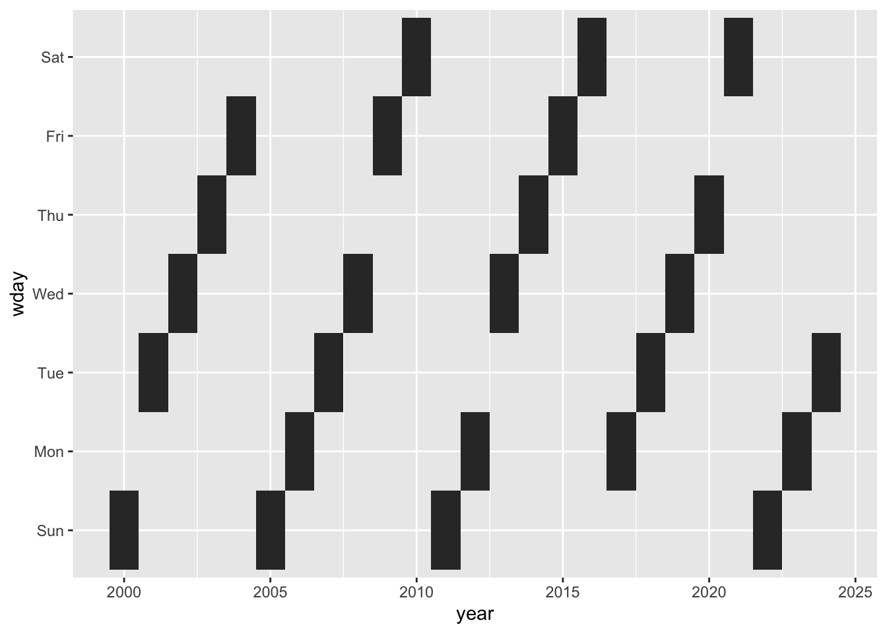

library(tidyverse)LHT #1 - Birthday Days
LHT
R
dataviz
What day is your next birthday day?
Birthday Days
I have a largish family. At last count, I believe I had something in the order of fifteen nieces and nephews (to give you an indication). When my girls and I drive to the family farm (yes, we have a family farm and, yes, you should be jealous because, yes, it is dope), various siblings of mine descend on the farm with their many children in-tow.
On one such occasion, a nephew of mine said a curious thing. We were discussing birthdays and he said something like “My birthday is always on Saturday or Sunday”. Now, being only eight or so at the time, I suppose it is forgivable that he thought this–perhaps his last couple of birthdays were on these days and the rest were simply too far distant to remember at his age. But it got me wondering: how do “birthday days” fall year-to-year?
A simple enough question, but as I thought about it I realized that I didn’t know anything about the subject. I had never thought about it! Now, obviously I could have simply Google’d my way into some higher state of enlightenment. But where’s the fun in that? I sensed that I had the tools in R toolkit to answer this question with logic alone (and who doesn’t like going the extra mile when it means you get to play with a new puzzle?).
So, as the Joker once said: “Here. We. Go.”
To the Batcave!
(or RStudio, or whatever…)
Step one: set-up and generate some data
I’ll only need the basic {tidyverse} suite for this. So let’s get that loaded up.
Next up, generate some data! Let’s see… I need to find out what day of the week a specific calendar date falls on across multiple years. So let’s pick a fictitious birthday to start (can’t be sharin’ my real deets on the interwebs). Let’s go with January 30th, 2000. Ok, how we’re ready to generate some data on all of the years moving forward!
bday_data <- tibble(year = seq(2000, 2024),
month = 1,
day = 30)
glimpse(bday_data)Rows: 25
Columns: 3
$ year <int> 2000, 2001, 2002, 2003, 2004, 2005, 2006, 2007, 2008, 2009, 2010…
$ month <dbl> 1, 1, 1, 1, 1, 1, 1, 1, 1, 1, 1, 1, 1, 1, 1, 1, 1, 1, 1, 1, 1, 1…
$ day <dbl> 30, 30, 30, 30, 30, 30, 30, 30, 30, 30, 30, 30, 30, 30, 30, 30, …Sweet! We’ve got our basic data with repeated day/month values across years. Now, in order to move the investigation forward, we’ll want to create some date columns using the {lubidate} package. This will help later on I’m sure…
bday_data <- bday_data |>
mutate(bday = ymd(paste(year, month, day, sep = " ")),
wday = wday(bday, label=TRUE))
glimpse(bday_data)Rows: 25
Columns: 5
$ year <int> 2000, 2001, 2002, 2003, 2004, 2005, 2006, 2007, 2008, 2009, 2010…
$ month <dbl> 1, 1, 1, 1, 1, 1, 1, 1, 1, 1, 1, 1, 1, 1, 1, 1, 1, 1, 1, 1, 1, 1…
$ day <dbl> 30, 30, 30, 30, 30, 30, 30, 30, 30, 30, 30, 30, 30, 30, 30, 30, …
$ bday <date> 2000-01-30, 2001-01-30, 2002-01-30, 2003-01-30, 2004-01-30, 200…
$ wday <ord> Sun, Tue, Wed, Thu, Fri, Sun, Mon, Tue, Wed, Fri, Sat, Sun, Mon,…I added two variables. The first is a for real for real date variable (“bday”). Basically, this variable has special metadata attached to it that allows for lots of convenient calculations; it’s not just a string. The second variable, “wday”, was the day of the week for the date variable “bday”. I chose to include labels too, and it gave me back a nicely ordered factor-esque variable (so convenient! Thank you, {lubridate}!).
Step two: visualize the data
Having created a dataset with lots of information regarding the days of interest, let’s take a look said shiny new dataset!
bday_data |>
ggplot(aes(year, wday)) +
geom_tile()
Cool! Ok, so there are definitely some patterns here. It looks like there are four-year stretches of consecutive days of the week for the birthday day. So, if my birthday was on a Wednesday last year, it would be Thursday this year, Friday the following year, and Saturday the year after that (assuming last year was the start of the four-year stretch)!
But the pattern is only four years long, after which it skips a day of the week, and then starts a new four year stretch. Interesting. I’m pretty sure I know what’s going on, but before we sleuth any further, let’s clean up this plot some.
bday_data |>
ggplot(aes(year, fct_rev(wday))) + #reversed the order of the y-axis
geom_tile(fill="dodgerblue") + #added nice color
labs(x=element_blank(), #dropped axis titles (they're pretty obvious anyway)
y=element_blank()) +
theme_classic() + #picked a better theme
coord_fixed(expand = F) #made the tiles square and removed gap between tile and axis lineThis is nicer, but I want to avoid having tiles floating in air. Let beef up our dataset a little bit to include more than just the specific birthday we chose.
bday_data <- bday_data |>
complete(year, wday)
glimpse(bday_data)Rows: 175
Columns: 5
$ year <int> 2000, 2000, 2000, 2000, 2000, 2000, 2000, 2001, 2001, 2001, 2001…
$ wday <ord> Sun, Mon, Tue, Wed, Thu, Fri, Sat, Sun, Mon, Tue, Wed, Thu, Fri,…
$ month <dbl> 1, NA, NA, NA, NA, NA, NA, NA, NA, 1, NA, NA, NA, NA, NA, NA, NA…
$ day <dbl> 30, NA, NA, NA, NA, NA, NA, NA, NA, 30, NA, NA, NA, NA, NA, NA, …
$ bday <date> 2000-01-30, NA, NA, NA, NA, NA, NA, NA, NA, 2001-01-30, NA, NA,…Ok, we filled out each year/weekday combination (the two axes of our plot). Now let’s try the plot again.
bday_data |>
ggplot(aes(year, fct_rev(wday))) +
geom_tile(fill="dodgerblue") +
labs(x=element_blank(),
y=element_blank()) +
theme_classic() +
coord_fixed(expand = F)Whoops! That didn’t work. We need to isolate our specific birthday days again. Hang on…
bday_data |>
ggplot(aes(year, fct_rev(wday))) +
geom_tile(aes(fill=ifelse(!is.na(day), "dodgerblue", "grey90")), #conditional fill
show.legend = F, #no legend
color="grey20") +
labs(x=element_blank(),
y=element_blank()) +
theme_classic() +
coord_fixed(expand = F) +
scale_fill_identity() + #take fill colors directly from conditional fill
scale_x_continuous(breaks = seq(2000, 2024)) + #x-axis label for every year
theme(axis.text.x = element_text(angle = 45, hjust = 1)) #tilt x-axis labelOk! Now we’re cooking with gas! Couple things I did there. First, I used a conditional argument in the aes() call (I can’t tell you how handy that trick is). Sometimes it’s better to have the result of the conditional hard-coded into your dataset if its information value is high. But we’re exploring here, so no biggie. Second, I adjusted the x-axis labels. I generally don’t like have labels that need to be angled in order to be legible, but this is not too egregious.
Step three: figure out the pattern!
We’re so close to figuring out birthday days, I can taste the German chocolate cake (it’s a huge thing in my family, just roll with it)! But did you guess what breaks up the four-year pattern of consecutive weekdays? Of course you did, you clever so-and-so, it’s leap years! Years are not actually 365 days long; rather, they are 356.25 days long. And every four years, that .25 days adds up to a whole dollar! Or day! So, let’s bring that information into our dataset and plot!
bday_data <- bday_data |>
mutate(lyear = leap_year(year))
glimpse(bday_data)Rows: 175
Columns: 6
$ year <int> 2000, 2000, 2000, 2000, 2000, 2000, 2000, 2001, 2001, 2001, 2001…
$ wday <ord> Sun, Mon, Tue, Wed, Thu, Fri, Sat, Sun, Mon, Tue, Wed, Thu, Fri,…
$ month <dbl> 1, NA, NA, NA, NA, NA, NA, NA, NA, 1, NA, NA, NA, NA, NA, NA, NA…
$ day <dbl> 30, NA, NA, NA, NA, NA, NA, NA, NA, 30, NA, NA, NA, NA, NA, NA, …
$ bday <date> 2000-01-30, NA, NA, NA, NA, NA, NA, NA, NA, 2001-01-30, NA, NA,…
$ lyear <lgl> TRUE, TRUE, TRUE, TRUE, TRUE, TRUE, TRUE, FALSE, FALSE, FALSE, F…Thanks again to the {lubridate} package (should really have made them today’s sponsor…), we have a lovely logical variable “lyear” that let’s us know if a specific year was a leap year. Now to update the plot!
bday_data |>
ggplot(aes(year, fct_rev(wday))) +
geom_tile(aes(fill=case_when((!is.na(day)) ~ "dodgerblue", #switched to case_when()
(is.na(day) & lyear==TRUE) ~ "brown4",
(is.na(day) & lyear==FALSE) ~ "grey90",)),
show.legend = F,
color="grey20") +
labs(x=element_blank(),
y=element_blank()) +
theme_classic() +
coord_fixed(expand = F) +
scale_fill_identity() +
scale_x_continuous(breaks = seq(2000, 2024)) +
theme(axis.text.x = element_text(angle = 45, hjust = 1))Look at that plot! It says it all! Four-year consecutive birthday days, skips one day because of those dastardly leap years, and then continues on for four more blissful years of predictable birthday days. What more could you want in a plot?
(oh god, is he going to go the extra mile? he knows no one cares, right? there are no grades here, just longer blog posts that no one will ever read. oh shit, here he goes!)
Step four (the extra mile): let’s turn all of this into a function!
I’m going to fast forward a little bit through this part and keep the commentary to a minimum.
#bday_plot function!
bday_plot <- function(birth_year, birth_month, birth_day){
require(dplyr)
require(forcats)
require(lubridate)
require(ggplot2)
require(ggtext)
require(tidyr)
#generate data
data <- tibble(year = seq(birth_year, year(Sys.Date())),
month = birth_month,
wday_num = birth_day,
bday = ymd(paste(year, month, wday_num, sep = " ")),
wday = wday(bday, label = TRUE),
lyear = leap_year(bday))
#BONUS
#add row for next birthday IF it has already passed for the current year
if (lubridate::ymd(Sys.Date()) > max(data$bday, na.rm = TRUE)){
bday_recent <- max(data$bday, na.rm = TRUE)
data <- bind_rows(data,
tibble(bday = ymd(bday_recent %m+% years(1)),
year = year(bday),
month = month(bday),
wday_num = day(bday),
wday = wday(bday, label = TRUE),
lyear = leap_year(bday)))
}
#Complete dataset
data_complete <- data |>
complete(year, wday) |>
group_by(year) |>
fill(lyear, .direction = "updown") |>
ungroup() |>
mutate(tile_col = case_when((bday==max(bday, na.rm = TRUE)) ~ 1,
(!is.na(wday_num)) ~ 2,
(is.na(wday_num) & lyear=="TRUE") ~ 3,
(is.na(wday_num) & lyear=="FALSE") ~ 4),
tile_col = as_factor(tile_col))
#visualize
plot <- ggplot(data_complete, aes(year, fct_rev(wday))) +
geom_tile(aes(fill = tile_col), linewidth = .5, color="grey20", alpha=.75, show.legend = F) +
theme_classic() +
theme(axis.text.x = element_text(angle=45,vjust = 1, hjust = 1, face = "bold", size = 10),
axis.text.y = element_text(face = "bold", size = 10),
axis.title = element_blank(),
axis.ticks = element_blank(),
plot.title = element_markdown(size = 16),
plot.subtitle = element_markdown(size = 12),
legend.title = element_blank(),
legend.position = "bottom") +
coord_equal(expand = FALSE) +
scale_x_continuous(breaks = seq(min(data_complete$year, na.rm = TRUE), max(data_complete$year, na.rm = TRUE), by=1)) +
scale_fill_manual(values = c("green3", "blue", "brown4", "grey90")) +
labs(title = "**What day is your <span style = 'color:green3;'>**next birthday**</span>**?",
subtitle = "Birthdates do not change but <span style = 'color:blue;'>**birthdays**</span> do...<br>on a 4-year pattern...<br>punctuated by <span style = 'color:brown4;'>**leap years**</span>!")
return(plot)
}And there we have it! Let’s kick her tires, yeah?
#let's test the function with the birthdate of our lord and savior, Hadley.
bday_plot(birth_year = 1979, birth_month = 10, birth_day = 14) Loading required package: ggtextPretty snazzy! Let’s try another!
#Honest Abe's birthday
bday_plot(birth_year = 1809, birth_month = 2, birth_day = 12) *gulp* That didn’t work… The nice thing about this function is that it outputs a ggplot object. Maybe we can make things more legible by updating the plot some.
bday_plot(birth_year = 1809, birth_month = 2, birth_day = 12) +
coord_radial(start=0, end = 1.5 * pi,
inner.radius = .2,
rotate.angle = TRUE) +
guides(theta = guide_axis_theta(angle = 90),
r = guide_axis(angle = 0)) Coordinate system already present. Adding new coordinate system, which will
replace the existing one.Nope. I declare that a failure. Honest Abe is just too righteous a bro, his birthday defies visualization. But! If we wanted to circularize the Hadley plot, I bet it would work!
bday_plot(birth_year = 1979, birth_month = 10, birth_day = 14) +
coord_radial(start=0, end = 1.5 * pi,
inner.radius = .2,
rotate.angle = TRUE) +
guides(theta = guide_axis_theta(angle = 90),
r = guide_axis(angle = 0)) +
theme(plot.margin = margin(0,1,0,1, unit = "cm"))Coordinate system already present. Adding new coordinate system, which will
replace the existing one.And, with that, I declare this blog post concluded! We learned something and got to play around a bit. We even made a pretty plot. It could be improved a great deal but it’s enough for now.
TTFN! Ta-ta fo now!
Citation
BibTeX citation:
@online{t._tanksley2024,
author = {T. Tanksley, Peter},
title = {LHT \#1 - {Birthday} {Days}},
date = {2024-09-17},
url = {https://petertanksley.github.io/posts/2024-09-17_lht_birthday_day/},
langid = {en}
}
For attribution, please cite this work as:
T. Tanksley, Peter. 2024. “LHT #1 - Birthday Days.”
September 17, 2024. https://petertanksley.github.io/posts/2024-09-17_lht_birthday_day/.